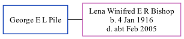

George E L Pile
[ Home ] | [ Calendar ] | [ Surnames Index ] | [ Family History ]George Pile and married Lena Winifred E R Bishop in Ashford, Kent, England in 1965.
Media
UK electoral registers 2002-2014 Transcription - 192-PILE-LENA-TN26-2737222089
Family Tree
Generated by ged2site. Last updated on Nov 13, 2024